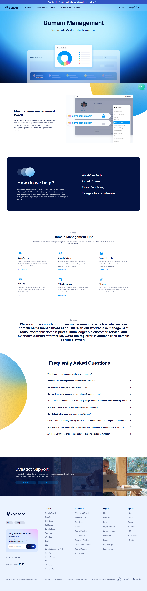
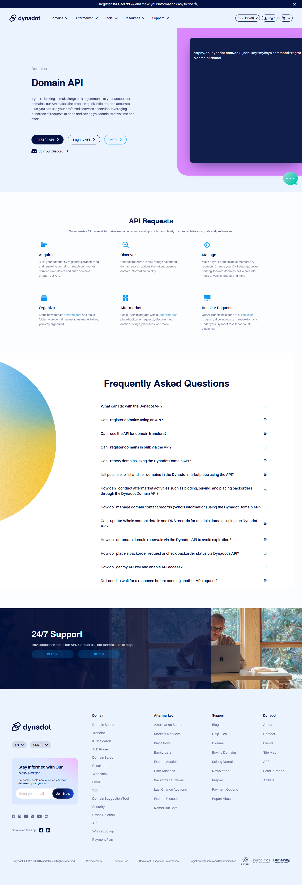

Dynadot 十年迭代史——从域名注册商到开发者域名平台
从最初的纯域名注册工具，到如今把 API、批量操作、Smart Folders 做成护城河，Dynadot 的进化路线藏着域名圈一条不那么拥挤的赛道。
现在的 Dynadot 是什么样？如果你打开它的官网进入管理中心，左侧导航会让第一次来的人愣一下——域名管理、DNS 设置、开发者 API、市场交易、邮件服务、建站工具，六个板块并排，不像一个传统的注册商，倒更像一个把域名当基础设施的开发者平台。尤其是那个 Smart Folders 加批量操作的组合，选中几十个域名一键改 DNS 或统一隐私设置，这在同类里不算新鲜，但 Dynadot 把它做得足够顺手，顺手到我后来换注册商时第一反应就是找"有没有 Smart Folder 替代"。
有意思的是，样本文档里没提版本号。没有 changelog，没有"v3.0 发布"的里程碑，甚至连"哪一年加的 API"这种时间点都没写——文档只管告诉你怎么用，不管告诉你这东西是什么时候来的。这恰恰暴露了 Dynadot 的一个性格：它不喜欢喊版本号，功能成熟到能用了就放出来，改了就静默迭代，用户感知的是"这个功能突然能用了"，而不是"我们发了新版本"。所以写它的进化史，得从功能倒推来路。
来路：从注册商到管理者
Dynadot 2002 年成立，那时候的域名注册商是什么样子？就是一个搜索框加一个结账页，你查域名、付钱、拿所有权，完事。DNS 要么用注册商默认的（通常不太好用），要么自己找 Cloudflare 或其他 DNS 提供商。Whois 联系人得自己手动改，隐私保护可能还是个需要额外付费的选项。
样本文档里提到的域名默认设置——注册新域名时自动带上 DNS、Whois、隐私配置——这个功能什么时候加的？文档没说，但它的设计逻辑暴露了一个关键转折点：Dynadot 不再把自己定位成"卖域名的"，而是"帮你管理域名的"。这个默认设置支持三个优先级层级：TLD 级别、Smart Folder 级别、账户级别，优先级从高到低，新域名按链匹配。这套设计放在今天看很合理，但放在当时，一个注册商花功夫做这种账户级偏好配置，说明他们盯上了一类新用户——不是那种注册一个 .com 就走的散户，而是手里有几十个上百个域名、需要系统化管理的批量用户。
批量操作面板是另一个信号。选中域名打勾，一键改 DNS、改 Whois、改隐私、批量续费、批量锁定解锁，甚至批量归入 Smart Folder。如果你还没开通过账户，想快速体验这套批量能力的话，直接从下载入口注册个域名就行。这些操作在 API 里也能对应——set_dns、set_whois、set_privacy、lock_domain、move_domain_to_folder——Web 控制台和 API 共享同一套后端。把 Web 控制台的批量能力和 API 对齐，这个决策很关键。很多注册商的 Web 能做的事 API 做不了，API 能做的 Web 又做不了，Dynadot 让两者平行，等于给开发者留了一扇门。

拐点：开发者 API 成了主轴
真正让 Dynadot 和其他注册商拉开差距的，是它的 API。样本文档里的 API 命令清单很能说明问题——查询类、管理类、生产类、市场类，四类命令覆盖了从查域名到注册、从改 DNS 到拍卖竞价的全链路。而且接口设计很克制：所有请求都发到同一个端点 api3.json，用 command 参数区分操作，没有 REST 那种一堆路径的复杂结构，Python 调起来就是 requests.get 加 params，干净利落。
速率限制也做得合理——基础账户每分钟 100~200 次，Reseller 账户更高，Sandbox 测试环境无严格限制。错误码从 0 到 6 加一个 99 的兜底，每种错误含义明确，不像某些注册商返回一串看不懂的 XML。还有那个 test 参数——批量注册或批量改 DNS 时可以加 test=1 走 Sandbox 通道，确认没问题再去掉，这个细节我在其他注册商 API 里很少见到，后来去看Dynadot文档才知道他们把这个设计直接写进了 API 命令速查的 Python 示例里。
API 的成熟度直接决定了 Dynadot 的用户画像。今天你去看它的论坛和用户群，讨论 API 批量注册、写脚本自动续费、对接自己项目的人占了相当大比例。这和那些主要靠中文 SEO 拉散户的注册商完全是两条路。Dynadot 甚至在官网文档里把 API 和 Web 控制台并列，没有"API 是给高级用户的隐藏功能"那种态度。

规律：他们一直在死磕什么
从样本文档覆盖的功能来看，Dynadot 十年迭代的优先级很清晰：
一直死磕的：批量和自动化。 Smart Folder、域名默认设置、Web 批量操作面板、API 命令清单——这四个功能串起来就是一条完整的自动化链路：用 Smart Folder 分组，用默认设置自动配置，用批量操作改存量，用 API 对接外部系统。这是他们从"卖域名"转向"管理域名"的核心投入。
一直没太管的：建站工具和邮件服务。 样本文档里建站工具和邮件服务只出现了名字，没有详细展开。对比 API 那篇详细到带 Python 示例的文档，建站和邮件的文档薄得像说明书。这倒不是说功能不行，而是资源倾斜很明显——开发者 API 组一直在加人，建站组可能长期只有两三个人维护。
介于之间的：域名市场。 拍卖竞价、Backorder 抢注、挂牌出售，这些功能 API 里有专门的命令，Web 界面也能操作，但文档里篇幅不大。Dynadot 做市场，但没把市场当核心业务，更像是给域名投资者这类用户补了个缺口。
这个优先级选择在域名圈是反常识的。大多数注册商的收入大头是注册费和续费，其次是增值服务（建站、邮件、隐私保护），API 往往是最不受重视的。Dynadot 反过来，把 API 做成了产品主轴，吸引了一批批量用户和开发者，而这批用户的续费稳定性远高于一次性注册的散户。
预判：照这个路线走下去
从迭代规律推，Dynadot 接下来几年大概率在做三件事：
第一，API 覆盖继续扩。样本文档里的 API 命令清单已经覆盖了注册、管理、市场三大块，但建站工具和邮件服务还没 API 化——如果他们坚持 API 主轴，这两块迟早要加。
第二，Smart Folder 会变重。目前 Smart Folder 只是分组加批量操作，未来可能加更多规则——比如"到期前 30 天自动标记续费"、"DNS 传播超时自动告警"——让文件夹从静态分组变成有行为的自动化单元。
第三，可能会出现更激进的开发者工具。比如官方 CLI 命令行工具、Terraform Provider、GitHub Actions 集成——这些都是当前 API 生态的自然延伸，Dynadot 如果要巩固开发者阵地，这步躲不开。
当然这些只是从迭代节奏推的，不当官方口径传。至于他们会不会突然砸钱做建站工具、或者搞一轮市场补贴抢散户——样本文档没提任何这类信号，我倾向于认为不会。十年都没碰的事，大概率是故意不碰。
最后说句实在的：如果你手里域名不多，Dynadot 和其他注册商的区别可能只是价格和界面。但如果你的域名开始超过二十个，开始需要批量改 DNS、写脚本自动续费、或者想把域名管理接到自己的项目里——去看看，它的官网和中文文档写得够细，API 也有现成的 Python 示例可以直接抄。这套资料在 GitHub、Gitee、GitCode 三个仓库都有，海外开发者习惯上GitHub拉，国内网络直接去Gitee更快，还有一份同步在GitCode做备份。